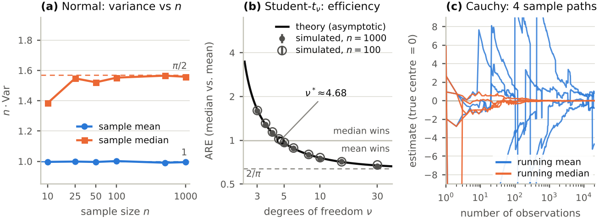
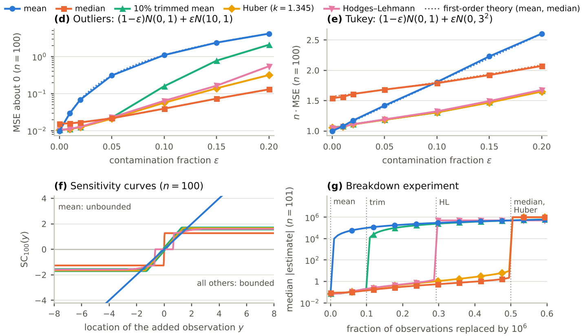

Sample Mean vs. Sample Median
How well do the two classic estimators of centre perform when data leave the normal model? We derive their variances, compare them with the Cramér–Rao bound, study their robustness, and test everything by Monte Carlo under heavy tails and outliers.
Group 11 · Bhumika · Parth · Satyam · Sriharipriya · Vishwabharathi
1Overview
Four components, one question: when should you prefer the median over the mean?
Theory
Exact and asymptotic variances for normal data, the Cramér–Rao lower bound, and the asymptotic relative efficiency (ARE) for normal, Student-t, Laplace and Cauchy models.
Robustness
Influence functions, breakdown points and the Tukey contamination model: why one wild observation ruins the mean but barely moves the median.
Simulation
Monte Carlo study (105 replications per cell) of bias, variance and MSE for the mean, median and three compromise estimators.
Application
Can the ARE be estimated from a real sample and predict the winner? Tested on anonymous class data with the bootstrap.
Convention used throughout: ARE = Var(mean) / Var(median). Values above 1 favour the median.
2Theory summary · full section by the group
Key results the other sections build on. Each is checked numerically in the test-suite.
Normal model
For \(X_i\overset{iid}{\sim}N(\mu,\sigma^2)\): \(\operatorname{Var}(\bar X_n)=\sigma^2/n\) and the Fisher information is \(I(\mu)=1/\sigma^2\), so the Cramér–Rao bound \(1/(nI)=\sigma^2/n\) is attained: \(\bar X_n\) is efficient.
The sample median
If \(f\) is continuous and positive at the median \(m\), then
Sketch. \(\{M_n\le m+x/\sqrt n\}=\{S_n\ge n/2\}\) with \(S_n\sim\mathrm{Bin}(n,p_n)\), \(p_n=F(m+x/\sqrt n)\approx\tfrac12+f(m)x/\sqrt n\); the binomial CLT gives probability \(\to\Phi(2f(m)x)\). At \(N(\mu,\sigma^2)\), \(f(m)=1/(\sigma\sqrt{2\pi})\), so \(\operatorname{Var}(M_n)\approx\pi\sigma^2/(2n)\).
Asymptotic relative efficiency
| Model | ARE | n · CRLB | Comment |
|---|---|---|---|
| Normal | 2/π ≈ 0.637 | σ² | mean attains the bound |
| tν, ν > 2 | \(\tfrac{\nu}{\nu-2}\,4f(0)^2\) | \(\tfrac{\nu+3}{\nu+1}\) | ν = 3: 1.621 · ν = 4: 1.125 · ν = 5: 0.961 · crossover ν* ≈ 4.68 |
| Laplace | 2 | 1 | the median is the MLE and attains the bound |
| Cauchy (t1) | ∞ | 2 | \(\bar X_n\overset{d}{=}X_1\) (characteristic function \(e^{-|t|}\)): not consistent. \(\operatorname{Var}(M_n)\approx\pi^2/(4n)\), efficiency \(8/\pi^2\approx0.81\) |
3Robustness summary · full section by the group
Efficiency is a property at the model; robustness is what happens when the model is slightly wrong.
Influence function
The effect of adding an observation at \(y\): \(\mathrm{IF}(y)=\lim_{\varepsilon\to0}[T((1-\varepsilon)F+\varepsilon\delta_y)-T(F)]/\varepsilon\). It also gives the asymptotic variance, \(\operatorname{AVar}=E[\mathrm{IF}^2]\).
At \(N(0,1)\) the median's influence never exceeds \(\sqrt{\pi/2}\approx1.25\) however wild the observation.
Breakdown point
The largest fraction of observations that can be replaced by arbitrary values before the estimate can be driven to infinity.
| Estimator | Theory | Observed |
|---|---|---|
| Sample mean | 0 | k = 1 (1.0%) |
| 10% trimmed mean | 10% | k = 11 (10.9%) |
| Hodges–Lehmann | 1 − 1/√2 ≈ 29.3% | k = 30 (29.7%) |
| Sample median | 50% | k = 51 (50.5%) |
| Huber (MAD scale) | 50% | k = 51 (50.5%) |
Observed breakdown is the smallest k for which the median |estimate| exceeds 10³ after k observations are replaced by 10⁶; for n = 101 the exact maximum is k = 51 (50.5%).
4Simulation complete
Owner: Parth. A two-page report with all tables and figures is in simulation_report.pdf; the code is in simulation/.
Design
- Estimators: sample mean and median (main grid), plus the 10% trimmed mean, Huber M-estimator (k = 1.345, MAD scale) and Hodges–Lehmann estimator (median of Walsh averages).
- Models (centre θ = 0): N(0,1); Student-t with ν ∈ {1, 2, 3, 4, 5, 10, 30} (t1 is the Cauchy); Laplace; Tukey scale contamination (1−ε)N(0,1) + εN(0,3²); asymmetric outliers (1−ε)N(0,1) + εN(10,1); ε ∈ {0.01, 0.05, 0.10, 0.20}.
- Grid: n ∈ {10, 25, 50, 100, 500, 1000}, B = 100,000 replications per cell (comparators: n ∈ {25, 100}, B = 50,000).
- Metrics: bias, variance, MSE with Monte Carlo standard errors from 20 batches (relative s.e. of every variance in Table 1 ≤ 0.6%), n·Var against the asymptotic limits and the Cramér–Rao bound, ARE, and quantiles of |error| when moments do not exist.
- Reproducible: master seed 20261110, one independent random stream per cell, 35 automated tests.

Findings
- Normal data. The mean attains the bound (n·Var = 0.99 at n = 1000). The median's n·Var climbs from 1.38 at n = 10 to 1.56, giving ARE = 0.638 against 2/π = 0.637. The low value at n = 10 is the even-n effect: an even-sized sample averages two central order statistics.
- Student-t. Simulated ARE matches 4σ²f(0)² within Monte Carlo error (t3: 1.598 vs 1.621; t4: 1.127 vs 1.125; t5: 0.960 vs 0.961). The median overtakes the mean at ν* = 4.68.
- Laplace. The median is the MLE and the ARE tends to 2, but slowly (1.74 at n = 100, 1.91 at n = 1000) because of the cusp of the density at its median.
- Cauchy. The mean's |error| quantiles never shrink (median |error| 0.997–1.003 for every n); the median converges, with n·Var = 2.45 against π²/4 = 2.47, efficiency 0.81 against the bound.
- Contamination. Symmetric scale contamination erodes the mean's advantage: ARE = 0.83 at ε = 0.05, 1.00 at 0.10, 1.24 at 0.20. Asymmetric outliers are far worse: the mean's MSE is 0.31 vs 0.022 for the median at ε = 0.05 (a factor 14) and a factor 28 at ε = 0.10.
- Compromise estimators. At the normal, trimmed mean, Huber and Hodges–Lehmann lose only about 6–7% (n·MSE 1.06–1.07 vs 1.01) while the median loses 55% (1.56); under moderate tails (t3, t5, Tukey) they beat both mean and median. The median wins only for very heavy tails or many outliers.
| Model | n·Var mean | n·Var median | median, theory | ARE n = 100 | ARE n = 1000 | ARE theory | eff. mean | eff. median |
|---|---|---|---|---|---|---|---|---|
| N(0,1) | 0.99 | 1.56 | 1.57 | 0.645 | 0.638 | 0.637 | 1.01 | 0.64 |
| t10 | 1.24 | 1.64 | 1.65 | 0.761 | 0.758 | 0.757 | 0.95 | 0.72 |
| t5 | 1.66 | 1.73 | 1.73 | 0.975 | 0.960 | 0.961 | 0.80 | 0.77 |
| t4 | 2.01 | 1.78 | 1.78 | 1.140 | 1.127 | 1.125 | 0.70 | 0.78 |
| t3 | 2.97 | 1.86 | 1.85 | 1.603 | 1.598 | 1.621 | 0.50 | 0.81 |
| t2 | ∞ | 2.00 | 2.00 | – | – | ∞ | 0.00 | 0.83 |
| Cauchy (t1) | ∞ | 2.45 | 2.47 | – | – | ∞ | 0.00 | 0.81 |
| Laplace | 2.00 | 1.05 | 1.00 | 1.735 | 1.909 | 2.000 | 0.50 | 0.96 |
| Tukey ε = 0.10 | 1.80 | 1.81 | 1.80 | 1.013 | 0.998 | 0.998 | 0.70 | 0.70 |

| Model | mean | median | 10% trimmed | Huber | Hodges–Lehmann |
|---|---|---|---|---|---|
| N(0,1), theory (n → ∞) | 1.00 | 1.57 | 1.06 | 1.05 | 1.05 |
| N(0,1) | 1.01 | 1.56 | 1.07 | 1.07 | 1.06 |
| t5 | 1.65 | 1.70 | 1.33 | 1.33 | 1.33 |
| t3 | 2.97 | 1.84 | 1.63 | 1.60 | 1.60 |
| Laplace | 2.01 | 1.17 | 1.52 | 1.46 | 1.37 |
| Cauchy (t1) | ∞ | 2.50 | 5.22 | 3.63 | 3.44 |
| Tukey ε = 0.10 | 1.81 | 1.79 | 1.31 | 1.31 | 1.32 |
| Outliers ε = 0.10 | 109.84 | 3.94 | 15.86 | 5.68 | 6.41 |
Practical guidelines
- Clean, near-normal data: use the mean; the median wastes about 36% of the information.
- Heavy tails (tν with ν ≤ 4, or infinite variance) or about 10% or more symmetric contamination: prefer the median.
- Asymmetric gross outliers: never use the raw mean; prefer the median or a robust compromise.
- When unsure: Huber or Hodges–Lehmann cost under 7% at the normal and are never far from the best.
- Caveat: under skewness the mean and the median target different parameters, so these comparisons presume symmetry.
Reproduce
git clone https://github.com/ParthSarda5/mean-vs-median
cd mean-vs-median
pip install -r requirements.txt
make test # 35 tests, about 5 s
make sim # full study, a few minutes on 2 cores
make report # compile the 2-page reportData behind every plot: main_grid.csv · t_sweep.csv · comparators.csv · cauchy_paths.csv · sensitivity.csv · breakdown.csv
5Application results to be added
Can the ARE be estimated from one sample, and does it predict which estimator wins?
We collect anonymous class data on variables of different shape (for example height, hours of sleep, Instagram followers; no names recorded) and compute the plug-in estimate
with \(\hat\sigma^2\) the sample variance, \(\hat m\) the sample median and \(\hat f\) a Gaussian kernel density estimate. The prediction (mean if \(\widehat{\operatorname{ARE}}<1\), median if \(>1\)) is checked with \(10^4\) bootstrap resamples by comparing \(\operatorname{Var}^*(\bar X)/\operatorname{Var}^*(M)\) with \(\widehat{\operatorname{ARE}}\).
Planned caveats: the plug-in estimate is noisy and biased low at small n (a synthetic check at n = 40 gave mean 0.55 and s.d. 0.10 under normality), so intervals matter; for skewed variables the two estimators target different parameters, so the ARE compares precision only.
6Team & sections
| Component | Folder | Owner | Status |
|---|---|---|---|
| Theory | theory/ | to be filled in | summary on this page |
| Robustness | robustness/ | to be filled in | summary on this page; evidence from the simulation |
| Simulation | simulation/, report/ | Parth | complete (code, data, tests, 2-page report) |
| Application | application/ | to be filled in | method planned; results to be added |
Final report due by email on 13 November 2026, 12:00 noon.
7References
- Tukey, J. W. (1960). A survey of sampling from contaminated distributions. In Contributions to Probability and Statistics, Stanford University Press.
- Huber, P. J. (1964). Robust estimation of a location parameter. Ann. Math. Statist. 35, 73–101. doi:10.1214/aoms/1177703732
- Hodges, J. L. & Lehmann, E. L. (1963). Estimates of location based on rank tests. Ann. Math. Statist. 34, 598–611. doi:10.1214/aoms/1177704172
- Hodges, J. L. & Lehmann, E. L. (1967). On medians and quasi medians. J. Amer. Statist. Assoc. 62, 926–931.
- Andrews, D. F., Bickel, P. J., Hampel, F. R., Huber, P. J., Rogers, W. H. & Tukey, J. W. (1972). Robust Estimates of Location: Survey and Advances. Princeton University Press.
- Hampel, F. R., Ronchetti, E. M., Rousseeuw, P. J. & Stahel, W. A. (1986). Robust Statistics: The Approach Based on Influence Functions. Wiley.
- Huber, P. J. & Ronchetti, E. M. (2009). Robust Statistics, 2nd ed. Wiley.
- van der Vaart, A. W. (1998). Asymptotic Statistics. Cambridge University Press.
- Casella, G. & Berger, R. L. (2002). Statistical Inference, 2nd ed. Duxbury.
- Morris, T. P., White, I. R. & Crowther, M. J. (2019). Using simulation studies to evaluate statistical methods. Statistics in Medicine 38, 2074–2102. doi:10.1002/sim.8086